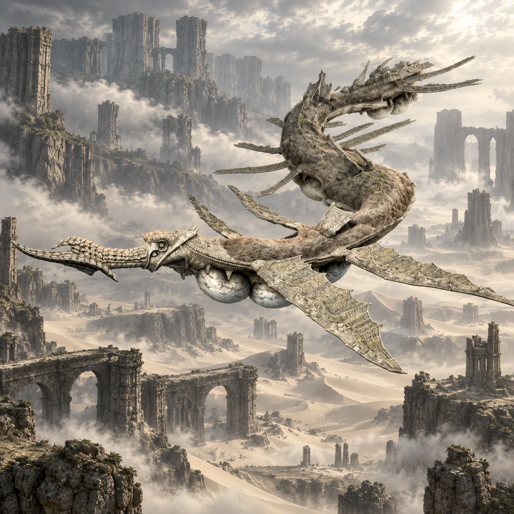

Dois nomes, duas origens
“Snake_C” é um nome de desenvolvimento. “Phalanx” é o nome popular entre os fãs, não um nome próprio apresentado durante o jogo.

Colosso 13 · Terras Proibidas
Uma linha viva atravessa o céu.
Phalanx desliza sobre as dunas com uma serenidade incomum. Seu corpo comprido faz o céu do deserto parecer pequeno.
Conheça o gigante01 / O gigante
O corpo serpentino se prolonga entre grandes nadadeiras, pelagem e placas no dorso. Bolsas claras sob o ventre se destacam contra o céu e a areia.
Phalanx segue seu percurso pelo deserto sem investir diretamente contra Wander. A escala do encontro nasce do movimento contínuo e da distância que precisa ser vencida para acompanhá-lo.
*A medida indicada segue o guia Vandal, citado nas fontes. Os tamanhos variam entre fontes e escalas; esta é uma referência aproximada de comprimento, não uma medida oficial confirmada.
02 / O caminho
Siga para sudoeste e retorne ao deserto atravessado no caminho até Barba. Desta vez, permaneça na grande região aberta de areia.
Oriente-se pela espada até as ruínas baixas no centro do deserto. Agro é a companhia para acompanhar o colosso pelo terreno.
Abrir mapa das Terras Proibidas03 / Um olhar mais atento
“Snake_C” é um nome de desenvolvimento. “Phalanx” é o nome popular entre os fãs, não um nome próprio apresentado durante o jogo.
Phalanx não parte para ataques diretos contra Wander. O contraste entre tranquilidade e tamanho marca o encontro.
As dimensões publicadas variam: há estimativas de 146 m e referências a 200 m. A ficha mantém explícita a medida adotada.
04 / O encontro
Algumas pistas para começar, deixando a descoberta da luta com você.
Dicas gerais para o modo Normal. A ficha não detalha todos os pontos vitais nem o desfecho do confronto.
Ficha baseada em registros da comunidade e guias de jogo. A arte é uma interpretação visual, não uma captura do jogo.